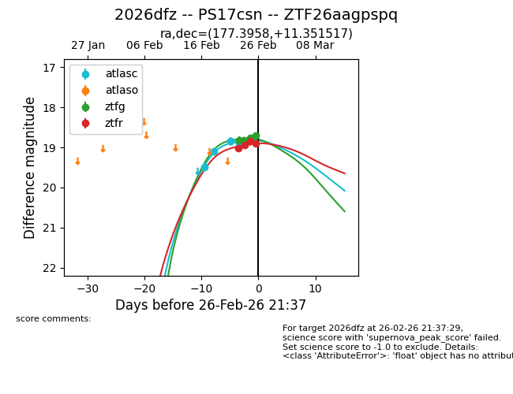
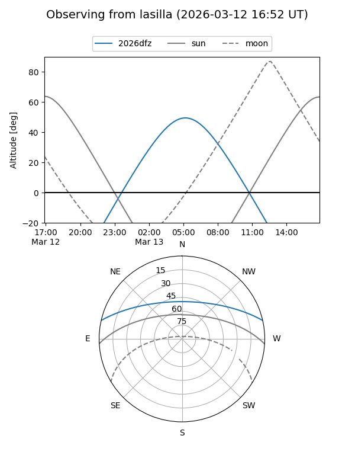
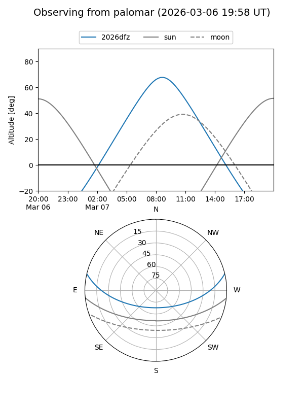
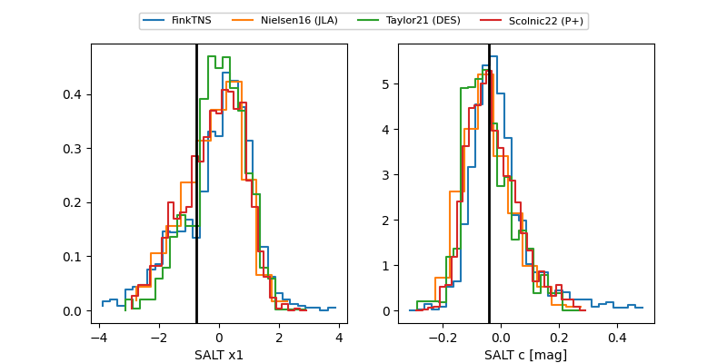

2026dfz
Target 2026dfz at 2026-02-26 21:38
Aliases and brokers:
FINK: link
Lasair: link
ALeRCE: link
TNS: link
YSE: link
alt names
ZTF26aagpspq (ztf,fink_ztf)
2026dfz (tns,yse)
PS17csn (panstarrs)
Coordinates:
equatorial (ra, dec) = 177.3958,+11.35152
equatorial (HMS+DMS) = 11:49:35.00,+11:21:05.46
galactic (l, b) = (257.2998,+68.55061)
Flags:
Photometry:
last atlasc=18.87, ztfg=18.71, ztfr=18.89
4 atlasc, 4 ztfg, 4 ztfr detections
Lightcurve

Visibility


Additional plots
